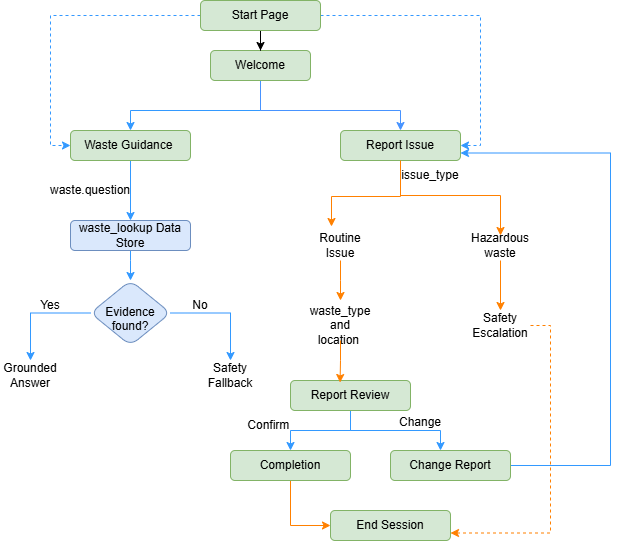
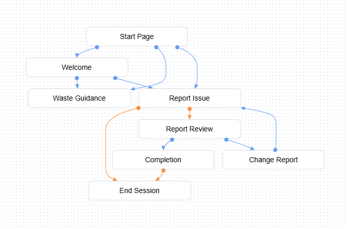
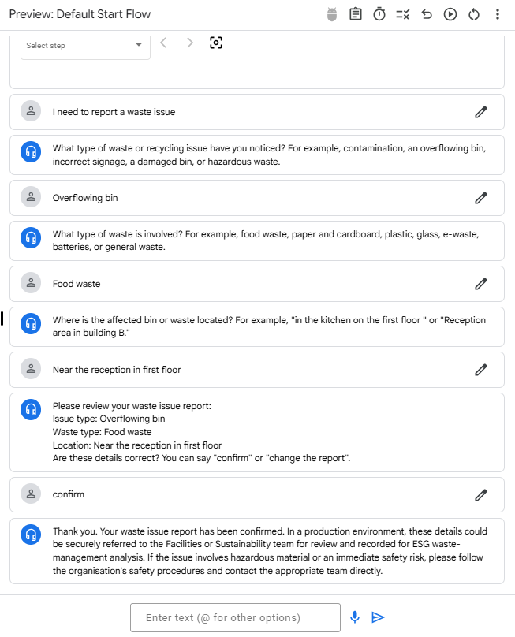
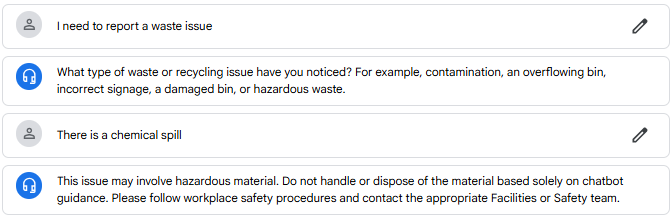

WasteGuide
Which bin should I use? How do I report a problem? I built WasteGuide to answer these two workplace questions and direct hazardous waste reports to human support.
The problem I saw
Employees need disposal advice while they’re standing at the bin. An organisation also needs consistent details when someone spots food in the recycling or finds a bin overflowing. WasteGuide supports both conversations.
How I solved it
For a disposal question, WasteGuide searches a fictional workplace policy I prepared for the assessment using Whitehorse City Council’s waste guide. A question such as “Where should batteries go?” uses that policy as the source for the answer.
For a routine report, it asks for three details: the issue, the type of waste and the location. The employee can confirm the summary or correct it in the same conversation.
For hazardous waste, the bot interrupts the routine questions and directs the employee to the facilities or safety team.
Chatbot architecture
I used six intents in Dialogflow CX to recognise what an employee wants to do. The disposal question opens the waste_lookup data store. The reporting route collects the three fields, then uses the issue type to decide whether to continue to review or give a safety response.








Benefits and outcomes
- Clearer recycling decisions. When an employee asks where batteries go, WasteGuide looks up the workplace policy and gives disposal guidance at the point of need.
- More consistent waste reports. Employees review and correct three details before confirming a report: the issue, the waste type and the location. This gives facilities staff a consistent description to follow up.
- Safer handling of hazards. When an employee reports a chemical spill, WasteGuide interrupts routine questions and directs them to the facilities or safety team for help.
Improvement points
- Connect confirmed waste reports to a sustainability dashboard. The sustainability team could group reports by waste type, issue and location to see which disposal mistakes recur and where. For example, repeated reports of food in recycling bins could guide a workshop or an awareness program on separating food waste. The team could then track how often employees report the same issue after the program.
- Expand the training phrases to cover more ways employees describe the same issue.
- Before workplace use, explain which details the chatbot collects and why. Define who can access conversation logs and how long they are kept.
Practical lessons I learned
- Standardise what needs counting. “Bin full” and “overflowing bin” can mean the same issue. I grouped them together while leaving location open so employees could describe the place in their own words.
- Give people a chance to correct the record. Reading the three details back lets an employee fix a misunderstanding before confirming.
- Give different problems different exits. A flight request needs a reminder of what WasteGuide covers. A disposal question the policy cannot answer needs a knowledge fallback. Hazardous waste needs a person.